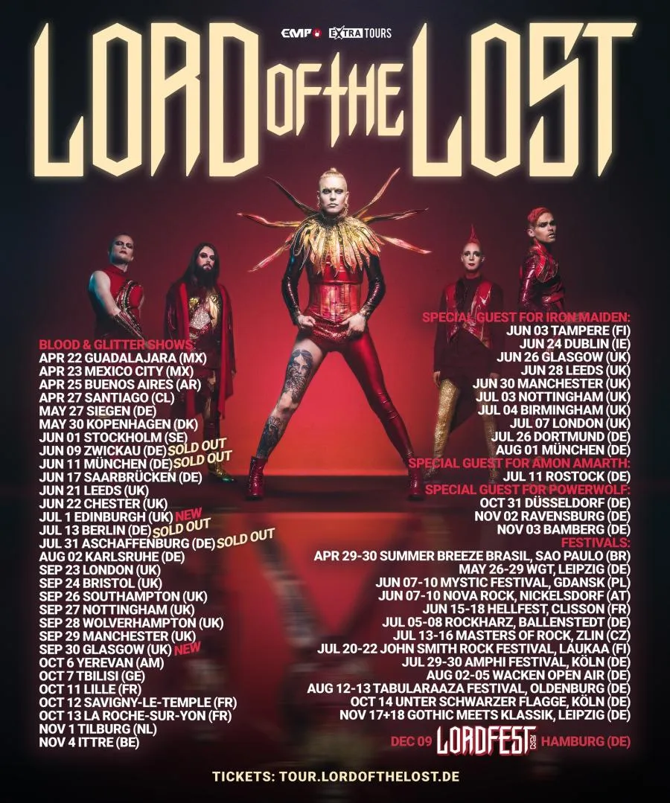
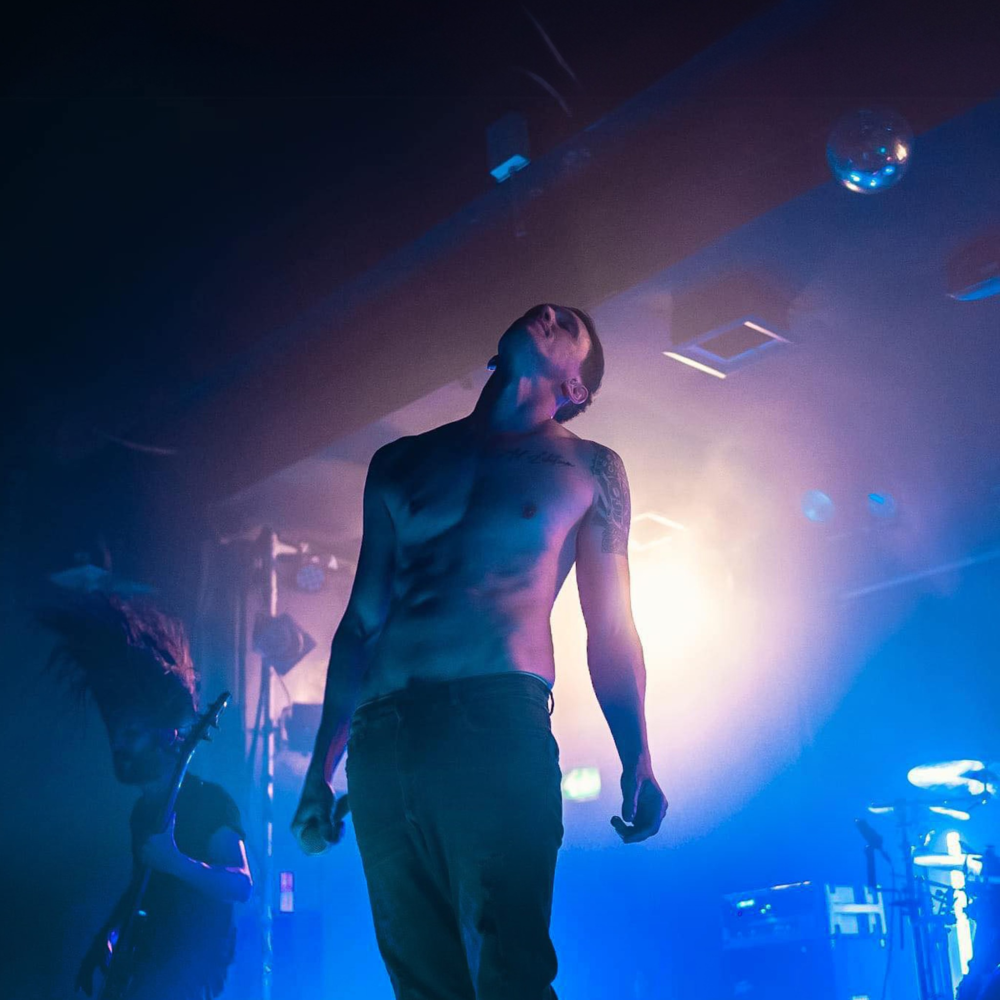
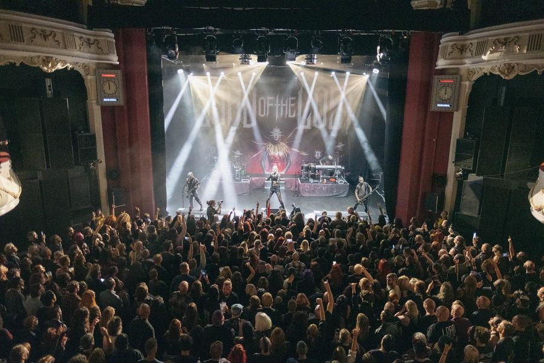

After a long train journey in which I drained my phone battery to about 36%, I arrived about an hour early at the O2 Shepherd’s Bush Empire venue and was surprised to find a sloppy long winding queue in an alley down the side of the building. With some difficulty, I was able to find where I could join in. The weather was crisp but not cold and there was a nice atmosphere. I was wearing my LOTL ‘Get Lost’ t-shirt, the one with the scary-looking cat. I caught a few compliments on the shirt and was baptised as a cat lover.
The queue kept getting longer and the usual handing out of flyers commenced. Suddenly a venue operative yelled for O2 customers to show their membership stating it would allow them to move to the front of the queue. Totally ignorant I only found out later that they meant O2 mobile customers, which I am. So, slightly baffled I looked on as some people whipped out their phones and were escorted out of the queue. I shrugged, I’ll find out later I thought, now of course, I am kicking myself. Not much later really the queue started moving, it was only then that I realised how long it had gotten. I looked to the right as the queue had progressed out of the alley and I could see the back end snake along the side of the adjoining buildings, far beyond where I could see. A long thread of mostly black-coloured clothing wearing people.
We’re in, I thought, as I thanked the venue operative after showing him the ticket on my phone, and walked through to the hall. I looked around and took in the environment, bar straight ahead, toilet up some very narrow stairs over on the right, stage and standing area down some stairs located on both the left and right of the bar. Let’s get this evening started! I ordered a pint of beer, for quenching the thirst and a double whiskey and coke to put me in the mood. Oh, London prices, went through my head, after I raised a slight eyebrow when the barman flipped the hand terminal presenting me with the total amount and I pressed my phone against it. I settled on a slightly off-center position and consumed my beer slowly. The venue quickly filled with around about 1400 people it was completely sold out I later discovered. There were two bands before LOTL would take the stage.
ALT BLK ERA These girls certainly had energy and you couldn’t fault them for their effort. I genuinely tried to like their performance. From their unique robotic, doll-like, dancing. To their enthusiastic jumping and attempts to engage with the crowd. Sadly, the music felt a bit too eclectic for me and others. You could tell, people were just waiting for it to be over. I saw frowned faces and heads being shaken. No, this wasn’t going to entertain this crowd and I’m sorry, but I drew the same conclusion. Every new song I tried with renewed enthusiasm to find that thing that would draw me in. The music had metal influences, with rap lyrics, heavy beats, and some melodic notes, the whole thing was bound together by the aforementioned performance. But it just didn’t work for that crowd or this performance.
All that said, when I got home and checked them out, the one song that jumped out to me was “Normally Like This”. I remembered hearing it in the live performance and it didn’t sound like this at all. So I’m not sure what was going on and hopefully, it was just the sound. I do wish them all the luck and wish them the best for the future.

esOterica At home, I had listened to a few songs of this band, and what I heard was something I could get behind. Additionally, when the singer on stage mentioned having a small kid, this immediately resonated with me, being in the same shoes. So I felt supportive, straight away. At one point, the singer gave the stage to a sign language interpreter which I had never experienced before. And the moment when the singer climbed off the stage and started walking through the crowd while singing was unexpected and simply amazing. However, I was slightly let down when I couldn’t make out the lyrics from most of the songs, which was so different from what I had heard on Spotify. The music itself was, as I had experienced, very laid back and relaxed, with some more aggressive jumps. The cover of “Silence” took me back to my teenage years, when I first experienced this song mixed into an EDM track. It hit me hard in the feels and the hairs on my arms rushed straight up. As much as it pains me to say this, I just couldn’t get over the lyrics and the difference between what I had heard online. I do like this band and I hope to see them again, but with better audio for the lyrics. Maybe where they are the headliner.

Lord Of The Lost When the lights dimmed the crowd went electric. The cheers kept on growing as the melodic music built up anticipation and then finally, they burst onto the stage. From here on, it was a non-stop ride, destination unknown. The crowd exploded and a moshpit erupted. The beats and riffs blasted forth and the energy felt like a massive tidal wave that had built up and had suddenly crashed upon us, waking everyone up from their slumber. With songs like “Morgana” and “Kill it with Fire” the tidal wave crushed everything and everyone and the tone was set. Lord of the Lost were here!
After being woken up and being thoroughly drenched in the melodic but turbulent waters, it was time to recover and unite. “No Respect for Disrespect” and “The Future of a Past Life” brought a calm feeling over the crowd and united them preparing for the next assault the band brought forth.
As a new tidal wave was about to hit the crowd, united they stood singing along with “The Gospel of Judas” but it didn’t take long before “Full Metal Whore” slammed down demonstrating the genuinely amazing breath of Lord of the Lost. Sadly, I don’t recall the entire set. Outside of, "One Last Song"](https://open.spotify.com/track/22Z1n6DFwgzo3Pfom1sm2a?si=d50f480b4a014ba4) which is one of my favorites, alongside “Drag me to hell”, “Six Feet Underground” and the unforgettable Die Tomorrow. There was also the Mic issue which was a hilarious moment in the performance, but it was handled with such grace and humour it felt like it was part of the show. As was the fact they didn’t do the whole encore thing, the singer said everyone was welcome to stay after they had finished but you’d be waiting for nothing as they don’t do encore songs, he said they would keep playing until they’re done. That was also nicely refreshing.
I do recall we took one big final stage pic while in the background The Look was playing I stayed till that was over, quickly dashed for the way too small stairs leading to the toilet, and then headed out the venue door making sure I could catch my train back home.
I zipped up my “Channel Zero” jumper, sunk my hands deep down into my pockets trying to keep warm from the evening chill, and navigated to the London Tube station entrance. I contemplated the performance, and how much I enjoyed it. I’ll say it again, the width of their abilities as a band astonished me. From growling/screaming heavy metal to more poppy less serious or even more theatrical songs they manage to do it all. A bigger surprise I had was that the singer announced they had done a Eurovision performance. I’m looking forward to seeing what they bring out in the future.
Back on the train home, I wrote some notes, my phone was now down to the last 9%, and I was surprised it managed to last this long. I looked at the calendar, the next gig would be something smaller and more intimate. I popped in my headphones, tapped the Spotify app, flicked to esOterica, and pressed play on their New Order’s True Faith cover “I used to think that the day would never come. That my life would depend on the morning sun…”
Au Revoir Mes Amis!